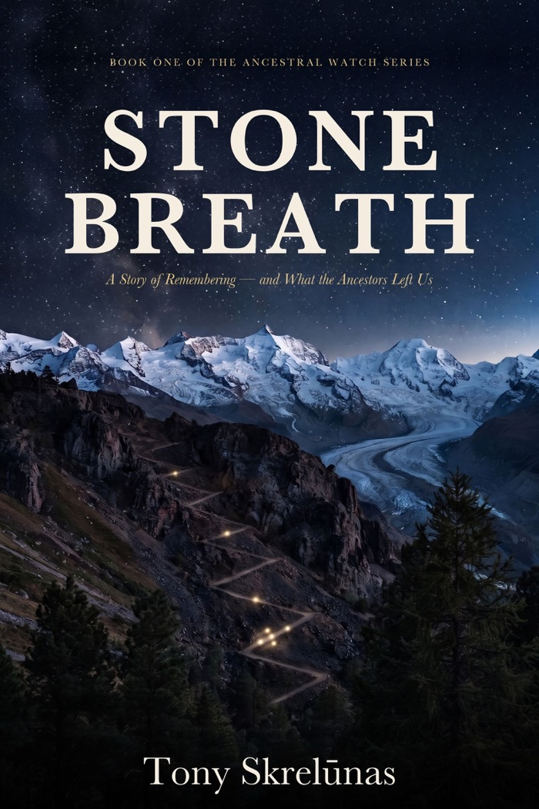

Book One · The Ancestral Watch
Stone Breath the Immersive Edition
The whole book, read to you, with the words lighting as they are read and the pictures moving with the story. Twenty-two days. One tool each day. A stone in your hand the whole way.
Bought the edition?
Your own link is on your Payhip receipt. Tap it on any phone or computer and the whole edition opens at once. Copied it instead? Paste it here.
The walk home, one chapter a day.
The chapters in the book’s own order, each with its tool, the study behind it, and one line to write. The last chapter is the longest, so it is walked over two days. Go at your own pace; from January 1 a day opens each weekday for everyone walking it together.
- 1Chapter 1 · Open to everyoneThe Canyon WithinThe tool: The Stone Breath
- Part One · The Arrival
- 2Chapter 2The Box He CarriedThe tool: The Stone Breath, the whole practice
- 3Chapter 3Fifty Years of WeatherThe tool: The Three Questions
- 4Chapter 4That Is Not What I AskedThe tool: The Daina Practice
- 5Chapter 5An Oak Dies StandingThe tool: The Fierce Witness
- 6Chapter 6Morning Has Gold in Its MouthThe tool: The Three-Breath Reset and the Dawn Alignment
- 7Chapter 7The TalkaThe tool: The Talka Protocol
- Part Two · The Staying
- 8Chapter 8Two WeeksThe tool: The Ancestral Council
- 9Chapter 9Face-First in the FernsThe tool: The Engine Builder
- 10Chapter 10The Third ArrowThe tool: The Envy Protocol
- 11Chapter 11A Meeting Without FoodThe tool: The Community Kitchen Model
- 12Chapter 12She Asked for the StoneThe tool: The Honorable Harvest
- 13Chapter 13The Broken BowlThe tool: Ichigo Ichie
- 14Chapter 14The Wound and the MedicineThe tool: The Centering
- 15Chapter 15Where Two Lands MeetThe tool: The Land Covenant
- 16Chapter 16The Four DaysThe tool: The Honorable Recognition
- 17Chapter 17Not a Price, a CovenantThe tool: The Compatibility Lens
- 18Chapter 18Eleven Meters of HallwayThe tool: The Mountain Compass, with the Mantra Anchor
- 19Chapter 19The Stillness Before the StormThe tool: The Museum of Proof and Seijaku
- Part Three · The Building
- 20Chapter 20The Oak at DuskThe tool: The Passing
- 21Chapter 21The Headlamp in the Dark, to mile 77The tool: The Mountain Within
- 22Chapter 21The Headlamp in the Dark, to the finish, and What Austėja KnewThe tool: The Headlamp Circle
Day 1 is open to everyone. The other twenty-one are in the edition.
Stone Breath, the Immersive Edition, $29: all twenty-two days, the e-book to keep, and three months of Ancestral Peaks. Members of Ancestral Peaks walk it with their membership.